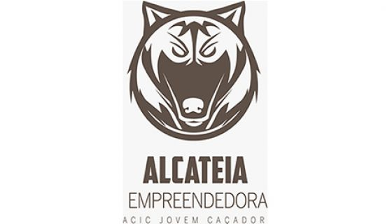
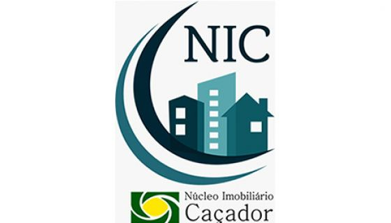
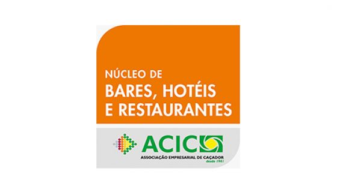
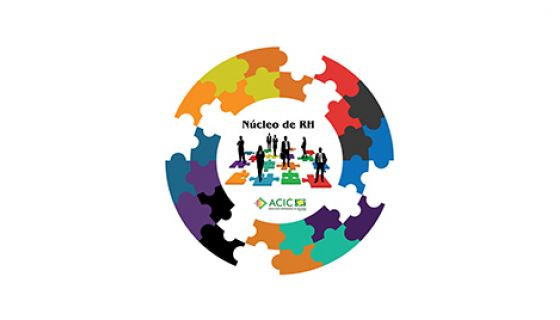
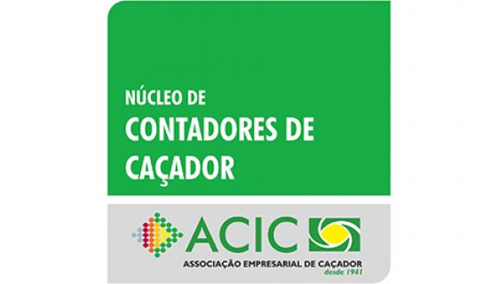
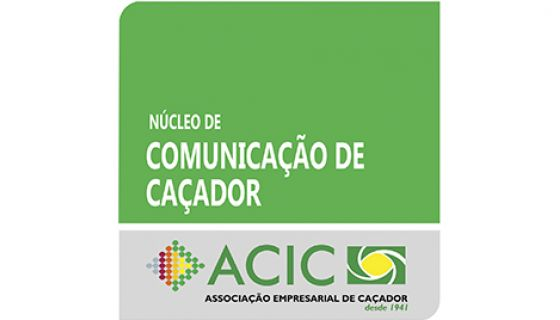
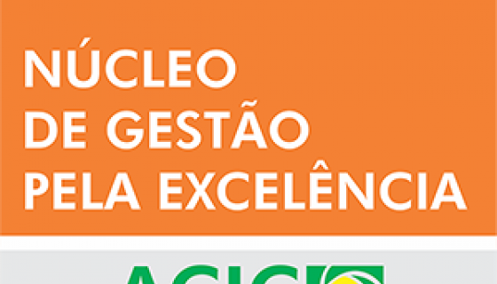

Núcleo Jovem Alcateia Empreendedora
NEGÓCIO: Integrar jovens empreendedores de Caçador.
MISSÃO: Desenvolver os jovens nucleados, fomentando a cultura de empreendedorismo.
VISÃO: Ser reconhecido como um núcleo gerador de projetos empreendedores.
VALORES: Colaboração, Inovação, Visão Empreendedora e Objetividade
Núcleo de Apicultores ACAP- Associação de Apicultores de Caçador e Região
Missão: Oferecer produtos saudáveis de ótima qualidade, respeitando e preservando a natureza, com base no bom atendimento aos clientes.
Visão: Ser referência em produtos saudáveis e que melhorem a qualidade de vida dos nossos consumidores.

Núcleo Imobiliário NIC- Núcleo Imobiliário de Caçador
NEGÓCIO: Integração dos corretores de imóveis,objetivando maior representatividade junto à comunidade.
MISSÃO: Desenvolver ações com parcerias e fortalecimentoda classe.
VISÃO: Ser referência em segurança nos negóciosimobiliários, buscando excelência dos serviços.
VALORES: Profissionalismo, parceria, credibilidade, inovação transparência e respeito.

Núcleo de Bares Restaurantes e Hotéis Núcleo de Gastronomia e Turismo

Núcleo De Recursos Humanos - Núcleo De RH
Missão: buscar soluções em RH através de um ambiente favorável e de políticas que promovam o desenvolvimento e crescimento das pessoas e das organizações. Visão: até 2018 ser referência para organizações que desenvolvem, valorizam e retém pessoas.

Núcleo de Contadores
Missão: Promover o desenvolvimento e a valorização da classe contábil, através de capacitação e cooperação mútua com uma visão inovadora. Encontrar soluções aos problemas comuns em nosso meio buscando a excelência em serviços prestados, fundados na qualidade, ética, união, profissionalismo e crescimento individual e coletivo.
Visão: Buscar a valorização da classe contábil contribuindo para a conscientização da sociedade ao destacar a importância do contador para o crescimento de toda comunidade.

Núcleo de Comunicação
A proposta do Núcleo de Comunicação da ACIC é unir profissionais e empresas online e off-line de Caçador, desenvolvendo equipes mais preparadas, focadas no aprimoramento profissional e evolução do mercado, através do associativismo. O Núcleo tem como principais objetivos: a cooperação e união dos profissionais da comunicação e a promoção do aperfeiçoamento profissional.
